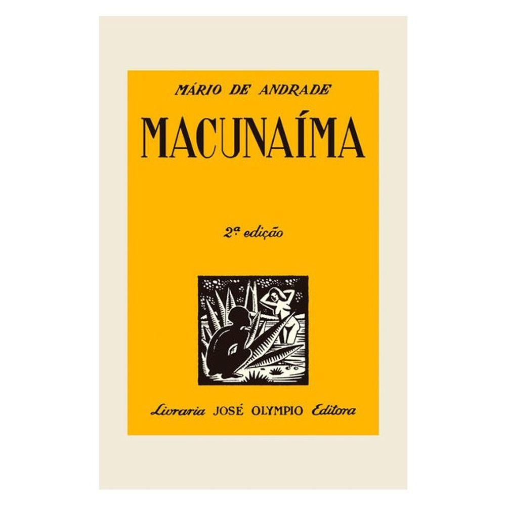
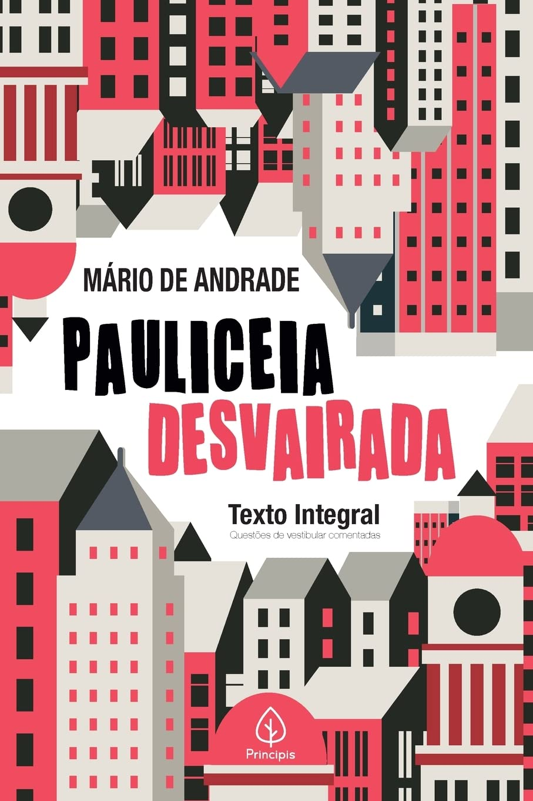

Macunaíma
Mário de Andrade
O Modernismo foi um movimento artístico e literário revolucionário que buscou renovar a cultura brasileira e romper radicalmente com a tradição acadêmica europeia. Teve como marco inicial a Semana de Arte Moderna, realizada em fevereiro de 1922 no Teatro Municipal de São Paulo. Os intelectuais e artistas da época propuseram a criação de uma arte genuinamente nacional, livre das amarras do passado e integrada às vanguardas europeias.
O movimento no Brasil dividiu-se em três grandes fases: a primeira fase (1922–1930), conhecida como "heroica" ou de destruição, focou na ruptura formal, no uso do verso livre e na antropofagia cultural; a segunda fase (1930–1945), caracterizada pela consolidação e pelo engajamento social, destacou o romance regionalista e a poesia existencial; e a terceira fase (1945–1960), com viés mais construtivo, formal e de pesquisa linguagem.
Nomes fundamentais como Mário de Andrade, Oswald de Andrade, Tarsila do Amaral, Manuel Bandeira, Graciliano Ramos e Carlos Drummond de Andrade redefiniram a estética e a linguagem literária do país, contestando as normas rígidas do Parnasianismo e a linguagem rebuscada do passado.
O Modernismo brasileiro emergiu em meio à crise da Primeira República (República Velha), dominada pelas oligarquias cafeeiras no modelo da "política do café com leite". O país vivia tensões sociais crescentes, o surgimento do Tenentismo e o descontentamento das classes médias urbanas com o sistema político tradicional.
O ápice desse processo de ruptura política ocorreu com a Revolução de 1930, que levou Getúlio Vargas ao poder e pôs fim à hegemonia oligárquica. Durante as décadas de 1930 e 1940, o avanço do autoritarismo e a consolidação do Estado Novo (1937–1945) influenciaram diretamente a segunda geração modernista, que passou a produzir romances de forte denúncia social e política.
No cenário internacional, o movimento transcorreu no período entre-guerras, testemunhando a ascensão dos regimes totalitários (Fascismo e Nazismo), a Grande Depressão de 1929 e os conflitos da Segunda Guerra Mundial, temas que ecoaram profundamente na produção intelectual da época.
O início do século XX no Brasil foi marcado pela aceleração da industrialização e pelo crescimento urbano acelerado, especialmente em metrópoles como São Paulo e Rio de Janeiro. A transição da economia agrário-exportadora para um modelo urbano-industrial trouxe novas tecnologias, como o rádio, o cinema, o automóvel e a iluminação elétrica.
Essa transformação atraiu intensos fluxos imigratórios europeus e provocou profundas mudanças no ritmo de vida e nas relações de trabalho. A cidade de São Paulo tornou-se o grande polo do desenvolvimento industrial e o cenário propício para que os artistas contestassem a estética tradicional em favor de uma arte dinâmica e veloz.
Paralelamente ao otimismo do progresso urbano nas capitais do Sudeste, o Nordeste brasileiro enfrentava secas devastadoras, miséria crônica e desigualdade social extrema. Esse contraste econômico e social serviu de combustível para a rica produção prosística dos anos 1930.

Mário de Andrade

Graciliano Ramos

Mário de Andrade

Carlos Drummond de Andrade
Narrativas em prosa focadas na denúncia social, na seca, no coronelismo e na realidade das classes populares do Brasil.
Composições com versos livres, humor, paródia, linguagem cotidiana e quebra total da metrificação tradicional.
Textos teóricos e romanescos focados no escândalo estético, na pesquisa de linguagem e na revalidação da identidade nacional.
Obras voltadas para a sondagem interior, análise da mente humana, angústias existenciais e conflitos intrapessoais.

1969 • Dir. Joaquim Pedro de Andrade

1963 • Dir. Nelson Pereira dos Santos

1984 • Dir. Nelson Pereira dos Santos

2013 • Dir. Jayme Monjardim

2019 • ZA/UM

1998 • LucasArts

2013 • 3909 LLC

2017 • Accidental Queens
A Semana de Arte Moderna de 1922 foi recebida com vaias, vaias de relógio, risos e vaias ruidosas pelo público conservador do Teatro Municipal de São Paulo. Manuel Bandeira, por exemplo, nem sequer pôde recitar seu poema "Os Sapos" (uma sátira feroz aos parnasianos), que teve de ser lido por Ronald de Carvalho sob intensos protestos da plateia.